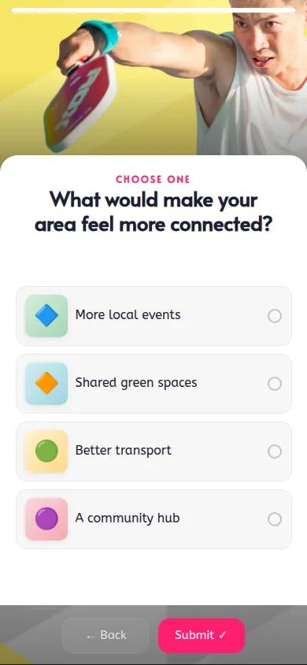
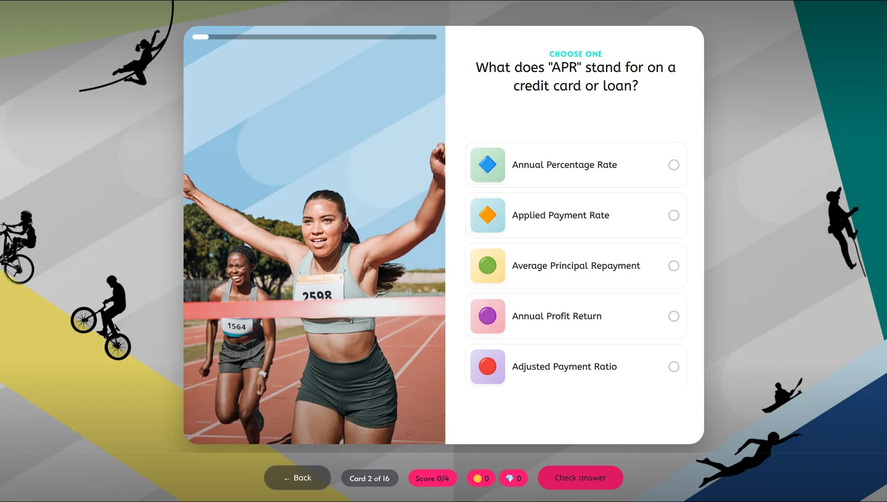
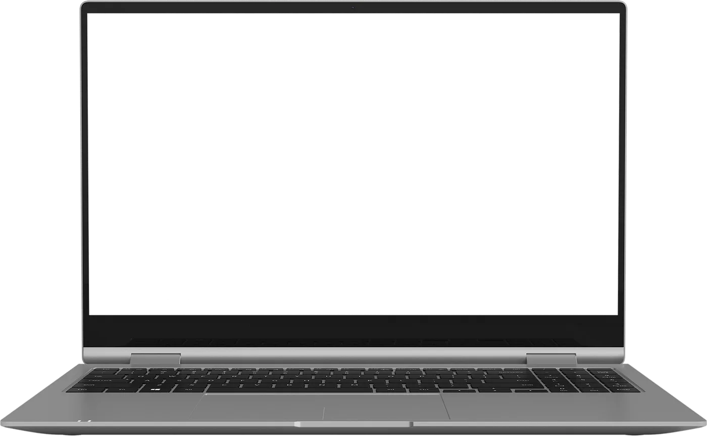
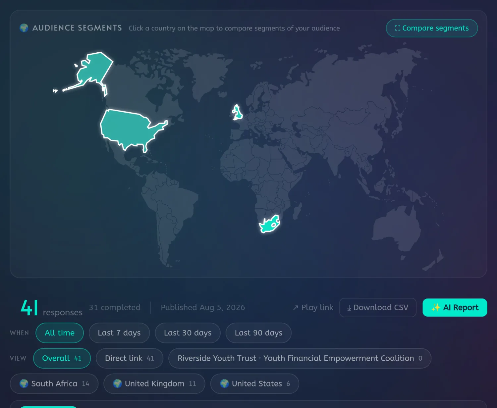
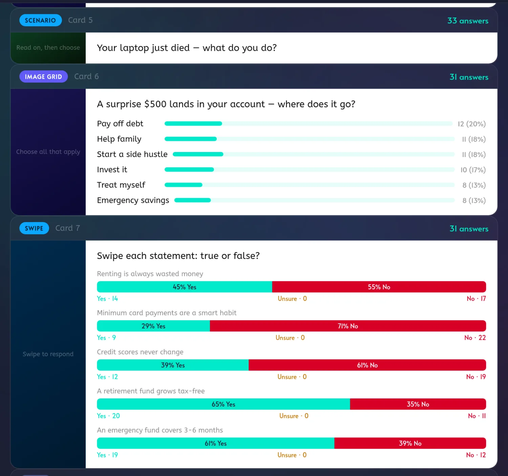
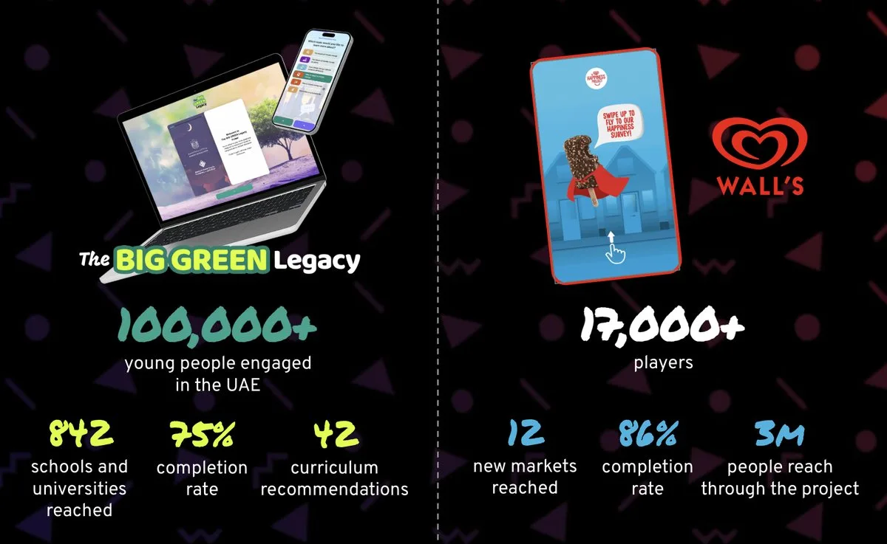

A research platform that runs
alongside your calls.
VertoNow reaches the contacts your call programme doesn't. Your primary interviews stay exactly as they are — the same list simply gets a second way in, one that takes three minutes and needs no diary.
-
01
Capture the measurement quicker
One send reaches the whole list at once, so results return in days rather than across a scheduling cycle.
-
02
Without adding interviewer hours
Nothing to book, nothing to write up. The same team covers considerably more of the list.
-
03
When the contact is ready to answer
A "not now" becomes a link they open on their own time, rather than the end of the conversation.
Three minutes. This is what your contact gets.
A live Verto, embedded in this page — not a video of one. Play it in the laptop, or tap the phone to move it across. Play it right here.

contacts will answer it.


A real Verto, playing right here. Want the whole thing? Open it in a new tab ↗
Counted while the fieldwork is still running.



"I loved working with the team at Play Verto... they understood the brief clearly, engaged with 17k consumers in a fun, relatable way."
— Sarah Hogan, Snr. Global Marketing Director, Wall's Ice CreamCreate it, share it, capture the results.
VertoNow is a self-serve platform: you own the Verto, the brand on it, and the data behind it.
And we build the first one with you
- We build the first Verto with you, from your existing questions — included in sign-up, not a separate engagement.
- Share it how you already reach people: email, a follow-up call, a QR code.
- Results live, and out to CSV or Google Sheets.